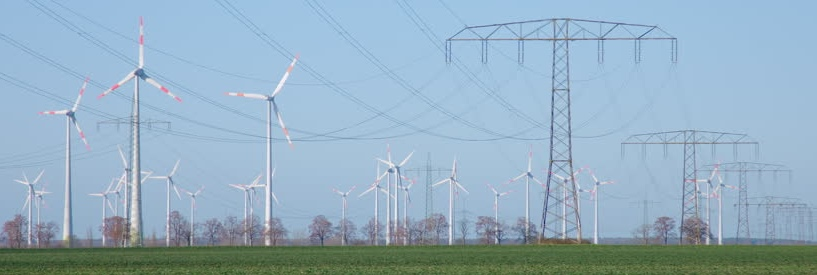

Overhead Power Line
An overhead power line is a structure used in electric power transmission and distribution to transmit electrical energy along large distances.
The purpose of this project was to develop a methodology on how to design an overhead power line that may be escalated to any system.
The particularity of this method is that it considers a group of the SwissKitePower systems as power generators, similar to a wind farm. Another particularity of the project is that a real location has been chosen to place the generators and the power line. This location is in Spain, what means that the Spanish regulation must be satisfied when designing the power line.
The aim of this project is not to focus on the SwissKitePower wind farm itself. It is supposed to be similar to other wind power farms that already exist. After the definition of the characteristics, the project focused on the way the energy is given to the grid. This was done through an overhead power line, which gives the power from the substation of the wind farm to the substation of the grid company.
